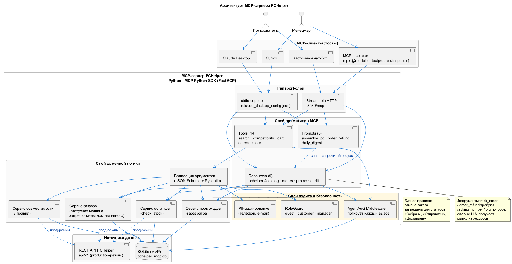
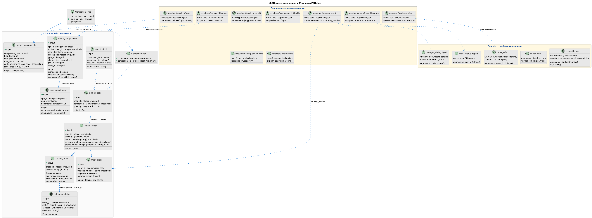
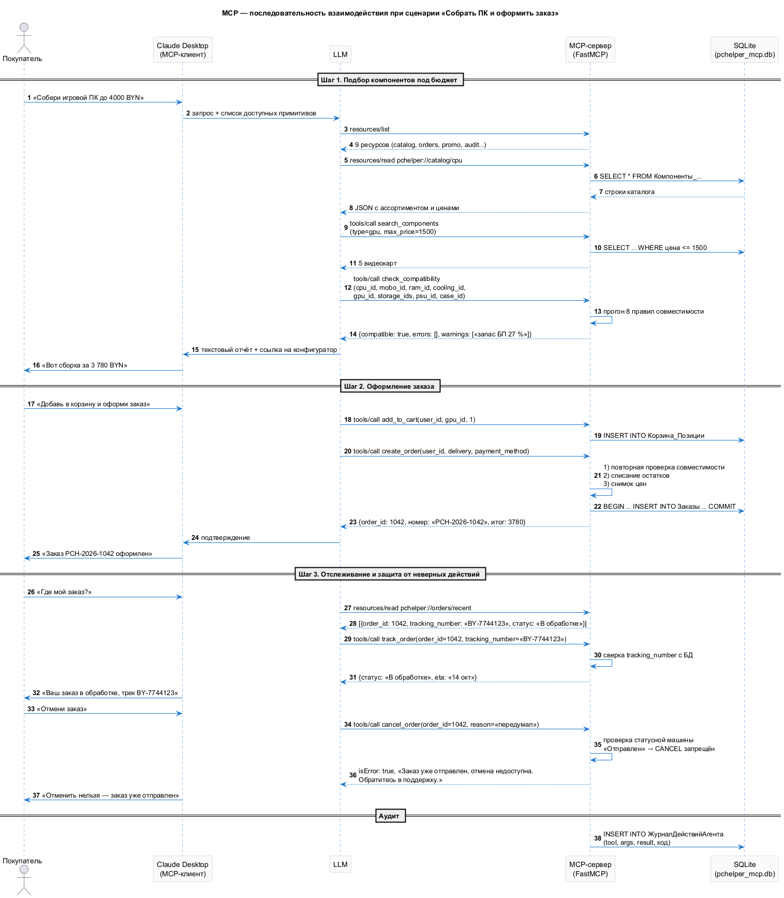

Цель и границы MVP
Цель: спроектировать и реализовать MVP MCP-сервера, позволяющего AI-ассистенту взаимодействовать с базой данных или API системы PCHelper.
Границы MVP:
| Входит | Не входит (планируется следующим этапом) |
|---|---|
| 13 инструментов (Tools) | Автоматическое выполнение заказа без подтверждения |
| 9 ресурсов (Resources) | Потоковый доступ (streaming) |
| 5 шаблонов промптов (Prompts) | Подключение к нескольким БД одновременно |
| SQLite mock-база, имена таблиц совпадают с PostgreSQL | Прод-режим через REST API |
| Аудит действий агента | Полноценная RBAC-модель для агентов |
| 39 юнит-тестов доменной логики | Нагрузочное тестирование |
Обязательные требования задания и их реализация
Методичка задаёт три обязательных условия. Ниже — где каждое из них реализовано в коде.
| Требование из задания | Реализация | Где посмотреть |
|---|---|---|
| Описать сущности системы | 9 сущностей: Компонент (8 видов), Пользователь, Корзина, Заказ, Склад, Промокод, Справочник переходов, Аудит | mcp/schema.sql, раздел 5.3 |
| Спроектировать JSON-схемы для Tools | 13 инструментов с типизированными сигнатурами; JSON Schema генерируется из них SDK | mcp/server.py, раздел 5.5 |
| Определить Resources | 9 ресурсов pchelper:// — каталог, правила, заказы, корзина, промокоды, аудит | mcp/server.py, раздел 5.6 |
| Разработать Prompts | 5 шаблонов: сборка, проверка, возврат, отчёт, дайджест | mcp/server.py, раздел 5.7 |
| Реализовать бекенд с mock-базой | SQLite pchelper_mcp.db, имена таблиц совпадают с db/01…02 | mcp/schema.sql, mcp/seed.sql |
| Агент не может отменить доставленный заказ | Три уровня защиты (сервис → справочник переходов → триггер БД) | mcp/services.py → cancel_order, раздел 5.8 |
Resource orders://recent | pchelper://orders/recent — последние 10 заказов с трек-номерами | mcp/server.py → resource_orders_recent |
Tool track_order со строгим tracking_number | Несовпадение с БД → ошибка с указанием прочитать ресурс | mcp/services.py → track_order, раздел 5.8 |
| Логирование действий агента | audit.py: время, агент, примитив, аргументы, результат, код, PII-маскирование | mcp/audit.py, раздел 5.9 |
| Документация README.md | Инструкция по развёртыванию, 4 сценария запросов, таблицы примитивов | mcp/README.md |
| Проверка через MCP Inspector | Пошаговая инструкция и фактические скриншоты | mcp/README.md, раздел 5.11 |
Сущности системы
| Сущность | Таблица | Ключевые поля | Роль в системе |
|---|---|---|---|
| Компонент | Процессоры, МатеринскиеПлаты, ОЗУ, СистемыОхлаждения, Видеокарты, Накопители, БлокиПитания, Корпуса | id, название, цена, характеристики | Товар каталога; 8 видов из-за гетерогенности |
| Пользователь | Пользователи | id, имя, email, роль | Субъект действий агента от его имени |
| Корзина | Корзины, Корзина_Позиции | пользователь_id, позиции | Черновик заказа |
| Заказ | Заказы, Заказ_Позиции | номер, статус, итоговая_сумма, снимок позиций | Подтверждённая покупка |
| Склад | Наличие | тип_компонента, идентификатор, количество, зарезервировано | Ограничение возможностей оформления |
| Промокод | Промокоды | код, тип_скидки, значение, мин_сумма | Скидка |
| Переход статуса | ПереходыСтатусовЗаказа | из_status, в_status, роль_кто | Бизнес-правило жизненного цикла заказа |
| Действие агента | ЖурналДействийАгента | момент, агент, инструмент, аргументы, результат | Аудит |
Именованные в mock-базе MCP-сервера теми же именами, что и в PostgreSQL (db/01_schema.sql, db/02_marketplace.sql) — это сделано намеренно, чтобы при переходе на PostgreSQL менялся только слой db.py.
Архитектура MCP-сервера
Файл: diagrams/plantuml/08-mcp-architecture.puml

Решение: два транспорта
| Транспорт | Когда используется | Как запустить |
|---|---|---|
| stdio | Claude Desktop, Cursor — сервер запускается как дочерний процесс клиента | python server.py |
| Streamable HTTP | MCP Inspector, удалённый запуск, интеграция в контейнер | python server.py --http --port 8080 |
Один и тот же код обслуживает оба транспорта — переключение флагом --http в функции main (4 строки, mcp/server.py).
Решение: доменная логика отделена от MCP
server.py ← тонкий слой: регистрация примитивов, вызов services.py
services.py ← доменная логика, НЕ импортирует mcp
audit.py ← аудит, не зависит ни от mcp, ни от домена
db.py ← доступ к даннымОбоснование: доменную логику можно покрыть обычными юнит-тестами pytest без установки пакета mcp. CI запускает эти тесты за секунды. Если бы логика жила внутри декораторов @mcp.tool(), тестировать её пришлось бы через протокол, что в разы медленнее и хрупче.
Tools — 13 инструментов
Файл: diagrams/plantuml/14-mcp-schema.puml

Принципы типизации аргументов
Инструменты типизированы по правилам MCP Python SDK:
| Тип | Использование | Пример |
|---|---|---|
Literal[...] | Закрытое множество значений → перечисление в JSON Schema | component_type: Literal["cpu","motherboard",…] |
int | Целое число; границы проверяются в сервисе | quantity: int = 1 (проверка 1…10) |
int | None | Необязательный параметр | gpu_id: int | None = None |
list[int] | None | Массив с необязательным присутствием | storage_ids: list[int] | None = None |
JSON Schema формируется автоматически из этих аннотаций — отдельного файла со схемами не требуется, расхождение между описанием и кодом невозможно по построению.
Таблица инструментов с JSON-схемами
| Инструмент | Входная JSON-схема (сокращённо) | Выход |
|---|---|---|
search_components | {component_type?: enum, brand?: string, query?: string, min_price?: integer, max_price?: integer, sort?: enum, limit?: integer(1…100)} | [Component] |
get_component | {component_type: enum, component_id: integer ≥ 1} | Component |
check_compatibility | {cpu_id: integer, motherboard_id: integer, ram_id: integer, cooling_id?: integer, gpu_id?: integer|null, storage_ids?: integer[], psu_id?: integer, case_id?: integer} | {compatible: boolean, errors: Issue[], warnings: Issue[], totalPrice, requiredPsuWatts} |
recommend_psu | {cpu_id: integer, gpu_id?: integer, headroom?: number(1.0…2.0)} | {cpuTdp, gpuTdp, recommendedWatts, recommendedWattageClass, alternatives[]} |
get_cart | {user_id: integer} | Cart |
add_to_cart | {user_id: integer, component_type: enum, component_id: integer, quantity?: integer(1…10)} | Cart |
apply_promo_code | {user_id: integer, code: string} | {code, type, value, discount, totalPrice} |
create_order | {user_id: integer, phone: string, delivery_method?: enum, payment_method?: enum, address?: string, promo_code?: string} | Order |
list_orders | {user_id?: integer, status?: enum, limit?: integer} | Order[] |
track_order | {order_id: integer, tracking_number: string — ОБЯЗАТЕЛЬНО} | {orderId, orderNumber, trackingNumber, status, carrier} |
cancel_order | {order_id: integer, reason: string(1…500), user_id?: integer} | Order |
set_order_status | {order_id: integer, status: enum, comment?: string} | Order |
check_stock | {component_type?: enum, component_id?: integer, only_low?: boolean, limit?: integer} | StockLevel[] |
Возвращаемая структура Issue
{
"level": "error",
"code": "PSU_INSUFFICIENT",
"field": "psuId",
"message": "Требуется минимум 438 Вт (TDP CPU 65 + GPU 245, запас 25 %), выбран БП на 400 Вт."
}Коды ошибок те же самые, что и в openapi.yaml и в функции БД fn_check_compatibility. Единый словарь кодов позволяет фронтенду, REST-клиенту и LLM одинаково понимать причину проблемы.
Resources — 9 ресурсов
Пять первых ресурсов статические, четыре последних — шаблонные (содержат {параметр} и запрашиваются через resources/templates/list).
| URI | Тип | Содержимое |
|---|---|---|
pchelper://catalog/{component_type} | Динамический | Каталог комплектующих по типу (cpu, ram, gpu, …), до 100 позиций |
pchelper://compatibility/rules | Статический | 8 правил совместимости текстом (Markdown) |
pchelper://orders/recent | Динамический | Последние 10 заказов с трек-номерами — обязательный ресурс из задания |
pchelper://users/{user_id}/orders | Динамический | История заказов покупателя |
pchelper://users/{user_id}/cart | Динамический | Корзина покупателя |
pchelper://users/{user_id}/builds | Динамический | Сохранённые сборки |
pchelper://policies/refund | Статический | Правила возврата, промокоды, формула расчёта |
pchelper://audit/recent | Динамический | Журнал действий агента |
pchelper://statuses | Статический | Справочник статусов и разрешённых переходов |
Статические и шаблонные ресурсы
Протокол MCP разделяет ресурсы на два вида, и это важно понимать при проверке через Inspector:
| Вид | Сколько | Как запрашивается | Примеры |
|---|---|---|---|
| Статические | 5 | resources/list | pchelper://compatibility/rules, pchelper://orders/recent, pchelper://policies/refund, pchelper://audit/recent, pchelper://statuses |
| Шаблонные | 4 | resources/templates/list, затем чтение с подстановкой | pchelper://catalog/{component_type}, pchelper://users/{user_id}/orders, pchelper://users/{user_id}/cart, pchelper://users/{user_id}/builds |
Итого 9 ресурсов. Шаблонные содержат {параметр} и требуют конкретного значения при чтении, поэтому в общем списке они не отображаются.
Фактический ответ сервера (проверка через протокол)
Проверка выполнена прямым обращением к развёрнутому в Docker MCP-серверу (http://localhost:8081/mcp) по протоколу Streamable HTTP:
initialize → сессия 25b68258ed6840f0be121507b83be2b0
serverInfo: {"name": "pchelper", "version": "1.30.0"}
capabilities: prompts, resources, tools
tools/list → 13
resources/list → 5
resources/templates/list → 4
prompts/list → 5Сервер в контейнере поднимается командой python server.py --http --host 0.0.0.0 --port 8080 (в логах: Uvicorn running on http://0.0.0.0:8080).
Пример содержимого pchelper://orders/recent
[
{
"id": 3,
"номер": "PCH-2026-000003",
"пользователь_id": 1,
"статус": "Отправлен",
"трек_номер": "BY-7744123",
"итоговая_сумма": 3610
},
{
"id": 2,
"номер": "PCH-2026-000002",
"пользователь_id": 2,
"статус": "В обработке",
"трек_номер": null,
"итоговая_сумма": 2888
}
]Именно из этого ресурса LLM берёт tracking_number для вызова инструмента track_order — это и требуется заданием.
Prompts — 5 шаблонов
| Промпт | Аргументы | Содержание |
|---|---|---|
assemble_pc | budget: float, task: str | Пошаговый алгоритм подбора: правила → каталог → подбор → check_compatibility → исправление → recommend_psu → check_stock → отчёт |
check_build | 8 идентификаторов | Проверка сборки пользователя с пояснением каждой ошибки и предложением конкретной замены |
order_refund | order_id: int | Сначала читает pchelper://policies/refund, затем определяет статус, применяет правило и считает сумму |
order_status_report | user_id: int | Читает users/{id}/orders, для заказов с трек-номером вызывает track_order |
manager_daily_digest | — | Сводка для менеджера: заказы в работе, заканчивающиеся остатки, заказы в пути |
Промпт order_refund — прямая реализация требования методички: «промпт, который заставляет LLM сначала прочитать правила возврата из ресурса, а потом посчитать сумму». Порядок задан явно в тексте шаблона и сопровождается запретом выдумывать суммы: «Не выдумывай суммы: используй только данные заказа из ресурса».
Валидация бизнес-правил
Запрет отмены доставленного заказа
Требование: «Необходимо реализовать валидацию (агент не должен иметь возможности отменить уже доставленный заказ)».
CANCELLABLE_STATUSES = ("Новый", "В обработке")
def cancel_order(order_id: int, reason: str, user_id: int | None = None) -> dict:
with get_conn() as conn:
order = _fetch_one(conn, 'SELECT * FROM "Заказы" WHERE id = ?', (order_id,))
if not order:
raise BusinessError(f"Заказ {order_id} не найден.")
if user_id is not None and order["пользователь_id"] != user_id:
raise BusinessError("Заказ принадлежит другому пользователю.")
current = order["статус"]
if current not in CANCELLABLE_STATUSES:
conn.execute(
'INSERT INTO "ЖурналДействийАгента" '
"(агент, инструмент, аргументы, результат, код_ответа, успешно) "
"VALUES (?, ?, ?, ?, ?, 0)",
("mcp-server", "cancel_order", ...,
f"Отказ: статус «{current}» не допускает отмены", 409))
conn.commit()
raise BusinessError(
f"Отмена невозможна: заказ {order['номер']} в статусе «{current}». "
f"Отменять можно только заказы в статусе «{CANCELLABLE_STATUSES}». "
f"После передачи в доставку возврат оформляется через службу поддержки.")Ни один аргумент инструмента cancel_order не обходит ограничение: проверка происходит после чтения заказа из базы и до записи. Попытка отмены логируется как отказ (успешно = 0, код_ответа = 409), поэтому в журнале видно, если агент регулярно пытается отменить доставленные заказы.
Три независимых уровня защиты перечислены в разделе 2.4.4 (справочник переходов) и продублированы в REST-API.
Строгая проверка tracking_number
Требование: «Tool track_package должен требовать строгого указания tracking_number, которое LLM возьмёт из прочитанного ресурса».
def track_order(order_id: int, tracking_number: str) -> dict:
with get_conn() as conn:
order = _fetch_one(conn, 'SELECT * FROM "Заказы" WHERE id = ?', (order_id,))
if not order:
raise BusinessError(f"Заказ {order_id} не найден.")
if not order["трек_номер"]:
raise BusinessError(
f"Заказ {order['номер']} ещё не передан в доставку — "
f"трек-номен не присвоен. Текущий статус: «{order['статус']}».")
if not tracking_number or tracking_number.strip().upper() != order["трек_номер"].upper():
raise BusinessError(
f"Трек-номер не совпадает с данными заказа {order['номер']}. "
f"Прочитайте ресурс pchelper://orders/recent и используйте "
f"точное значение трек-номера из него.")
return {…}| Вход | Результат |
|---|---|
| Точный трек-номер из ресурса | 200, статус доставки |
| Другой трек-номер | isError с указанием прочитать pchelper://orders/recent |
| Пустая строка | isError |
| Заказ ещё не отправлен | isError: «трек-номен не присвоен, текущий статус …» |
Валидация входных данных
| Проверка | Место | Поведение при нарушении |
|---|---|---|
| Тип компонента в перечне | services._component, search_components | BusinessError со списком допустимых значений |
| Компонент существует | services._component | BusinessError с указанием идентификатора и типа |
minPrice ≤ maxPrice | search_components | BusinessError: «minPrice не может превышать maxPrice» |
quantity в диапазоне 1…10 | add_to_cart | BusinessError: «Количество должно от 1 до 10» |
| Остаток на складе | add_to_cart, create_order | BusinessError: «Доступно N шт., запрошено M» |
| Адрес при доставке курьером | create_order | BusinessError: «требуется адрес» |
| Причина отмены непустая | cancel_order | BusinessError: «Укажите причину отмены» |
| Заказ принадлежит пользователю | cancel_order, get_order | BusinessError: «Заказ принадлежит другому пользователю» |
| Переход статуса разрешён | set_order_status | BusinessError со списком допустимых переходов |
Аудит и маскирование персональных данных
Требование: «Особенность: работа с конфиденциальными данными (требование к логированию действий агента)».
Каждый вызов инструмента и чтение ресурса оборачиваются контекстным менеджером audit.audit():
@mcp.tool()
def cancel_order(order_id: int, reason: str, user_id: int | None = None) -> dict:
with audit.audit(AGENT, "cancel_order",
{"order_id": order_id, "reason": reason}) as ctx:
order = services.cancel_order(order_id, reason, user_id)
ctx["result"] = "Отменён"
return order| Поле журнала | Пример значения |
|---|---|
момент | 2026-10-13 09:20:41 |
агент | claude-desktop |
инструмент | cancel_order |
аргументы (JSON) | {"orderId": 3, "reason": "передумал"} — PII замаскировано |
результат | Отменён либо Отказ: статус «Отправлен» не допускает отмены |
код_ответа | 200 / 409 / 400 |
успешно | 1 / 0 |
длительность_мс | 12 |
Маскирование PII (audit.mask_pii) применяется перед записью:
| Поле | Исходное значение | В журнале |
|---|---|---|
phone | +375291112233 | +375…33 |
email | anna@example.by | an***@example.by |
address | ул. Ленина, 15, кв. 42 | *** |
orderId | 3 | 3 — не персональные данные, не меняются |
Фактические записи журнала после прогона тестов:
AUDIT: {'инструмент': 'cancel_order', 'результат': 'Отменён', 'код_ответа': 200, 'успешно': 1}
AUDIT: {'инструмент': 'cancel_order', 'результат': 'Отказ: статус «Доставлен» не допускает отмены', 'код_ответа': 409, 'успешно': 0}
AUDIT: {'инструмент': 'cancel_order', 'результат': 'Отказ: статус «Отправлен» не допускает отмены', 'код_ответа': 409, 'успешно': 0}Отказы зафиксированы отдельно и с кодом 409 — при разборе инцидента будет видно, что агент пытался совершить недопустимое действие.
Примеры запросов от лица пользователя
Сценарий А — подбор ПК под бюджет
Пользователь: Собери игровой ПК до 4000 BYN
LLM → [prompts.assemble_pc(4000, "Игры")]
LLM → [resources/read pchelper://compatibility/rules]
LLM → [resources/read pchelper://catalog/cpu]
LLM → [tools/call search_components(component_type="gpu", max_price=1500)]
LLM → [tools/call check_compatibility(cpu_id=1, motherboard_id=1, ram_id=1,
cooling_id=1, gpu_id=1, storage_ids=[1],
psu_id=1, case_id=1)]
LLM → Собрал: Ryzen 5 7500F + ASUS B650M-P + 16 ГБ DDR5-6000 +
DeepCool AK400 + Radeon RX 7700 XT + Kingston NV2 1 ТБ +
Pure Power 650W + DeepCool CH370.
Итого 2 391 BYN, запас бюджета 1 609 BYN.Сценарий Б — отслеживание заказа
Пользователь: Где мой заказ?
LLM → [resources/read pchelper://orders/recent]
→ PCH-2026-000003, статус «Отправлен», tracking_number BY-7744123
LLM → [tools/call track_order(order_id=3, tracking_number="BY-7744123")]
LLM → Заказ PCH-2026-000003 в пути, трек-номер BY-7744123.Сценарий В — попытка отмены отправленного заказа
Пользователь: Отмени заказ PCH-2026-000003
LLM → [tools/call cancel_order(order_id=3, reason="передумал")]
LLM → isError: Отмена невозможна: заказ PCH-2026-000003 в статусе
«Отправлен». Отменять можно только заказы в статусе «Новый»,
«В обработке». После передачи в доставку возврат оформляется
через службу поддержки.
LLM → Отменить нельзя — заказ уже отправлен. Могу рассчитать возврат
по правилам (15 % комиссия) или оформить обращение в поддержку.Сценарий Г — расчёт возврата
Пользователь: Сколько мне вернут за заказ 1042?
LLM → [prompts.order_refund(1042)]
LLM → [resources/read pchelper://policies/refund] ← сначала правила
LLM → [resources/read pchelper://orders/recent]
LLM → Заказ PCH-2026-000003 в статусе «Отправлен».
По правилам возврата: комиссия 15 % от стоимости позиции.
Позиция «AMD Radeon RX 7700 XT» — 1 299 BYN.
Сумма возврата: 1 299 − 15 % = 1 104 BYN.